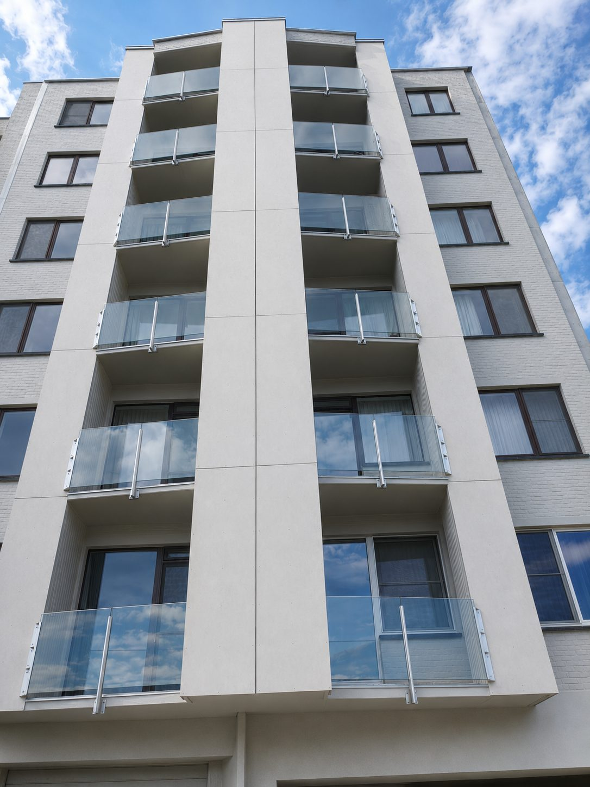

Home › Dakwerken en dakrenovatie in West- en Oost-Vlaanderen
Dakwerken en dakrenovatie in West- en Oost-Vlaanderen
Een dak laat zelden plots los. Meestal is er eerst een vlek op het plafond, een pan die scheef ligt, of een dakgoot die bij elke bui overloopt. Wie er dan bij is, betaalt een herstelling. Wie wacht, betaalt een dak plus de isolatie en het plafond eronder.
Wij doen platte en hellende daken, van een enkele herstelling tot een volledige vernieuwing met isolatie. Altijd met een vaste prijsafspraak vooraf en tien jaar garantie op het werk.
Wat wij doen aan daken
- Volledige dakrenovatie van hellende daken: nieuwe onderdakfolie, isolatie, panlatten en dakbedekking
- Platte daken in EPDM, roofing of bitumen, met isolatie van buitenaf
- Dakpannen en natuur- of kunstleien vervangen, plaatselijk of over het hele dak
- Dakisolatie: sarking, isolatie tussen de kepers, zolderisolatie
- Sandwichpanelen voor loodsen, bijgebouwen en landbouwgebouwen
- Dakgoten in zink, PVC of aluminium vervangen en herstellen
- Dakoversteken uitbekleden, lichtkoepels en dakvensters vervangen
- Asbestleien en asbestgolfplaten verwijderen en vervangen


Isoleren terwijl het dak toch openligt
Ligt het dak toch open, dan is dat het goedkoopste moment om te isoleren: de stelling staat er, de dakbedekking is eraf, en de meerkost is beperkt tot het materiaal en enkele dagen werk. Achteraf apart isoleren kost bijna altijd meer.
Wij bekijken samen welke opbouw past bij uw dak en uw budget — sarking bovenop de kepers wanneer de hoogte het toelaat, isolatie tussen de kepers wanneer dat niet kan. Voor beide bestaan er premies; wij zeggen u vooraf welke van toepassing zijn.
Een vraag of een prijs nodig?
Bel ons, stuur een WhatsApp of vraag een vrijblijvende offerte aan. U krijgt een vaste prijsafspraak en tien jaar garantie op het werk.
Veelgestelde vragen
Wanneer moet een dak vernieuwd worden?
Een pannendak gaat vlot veertig tot zestig jaar mee, roofing en EPDM twintig tot dertig. Terugkerende lekken, natte isolatie, verweerde pannen of een onderdak dat verpulvert zijn de tekenen dat herstellen niet langer loont.
Wat kost een dakrenovatie?
Dat hangt af van de oppervlakte, de helling, de dakbedekking en of er geïsoleerd wordt. Wij komen ter plaatse meten en geven een vaste prijs, zodat u vooraf weet waar u aan toe bent. De offerte is gratis en vrijblijvend.
Hoe lang duren dakwerken?
Een gemiddelde dakrenovatie van een rijwoning duurt één tot twee weken, afhankelijk van het weer. Wij dekken het dak elke avond af zodat er niets binnenkomt.
Wat is het verschil tussen EPDM en roofing?
Roofing is bitumen in meerdere lagen, gebrand of gekleefd. EPDM is één rubberen membraan, meestal in één stuk, en heeft dus veel minder naden. EPDM gaat gemiddeld langer mee; roofing is goedkoper in aankoop.
Mag ik asbestleien zelf verwijderen?
Hechtgebonden asbest in goede staat mag een particulier onder voorwaarden zelf verwijderen, maar bij een heel dak is dat afgeraden. Wij nemen de verwijdering en de afvoer mee op in de offerte.
Krijg ik premies voor dakisolatie?
Meestal wel. Er bestaan premies via Mijn VerbouwPremie en soms via uw gemeente. De voorwaarden veranderen regelmatig; wij zeggen u bij de offerte wat er op dat moment geldt.
Waar wij werken
Wij werken in West-Vlaanderen, Oost-Vlaanderen en het westen van Henegouwen. Onder meer in Anzegem, Waregem, Kortrijk, Harelbeke, Kuurne, Deerlijk, Zwevegem, Avelgem, Wielsbeke, Ingelmunster, Izegem, Lendelede, Wevelgem, Menen, Tielt, Roeselare, Deinze, Zulte, Oudenaarde, Ronse en Gent. Staat uw gemeente er niet bij? Bel gerust, wij komen ruimer dan deze lijst.